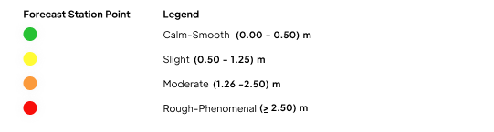

<ion-header class="ion-no-border ion-text-center">
  <ion-toolbar>
    <ion-title *ngIf="overview">{{"Ocean Overview" | translate}}</ion-title>
    <ion-title *ngIf="wind">{{"Wind Speed" | translate}}</ion-title>
    <ion-title *ngIf="swell">{{"Swell Wave Height" | translate}}</ion-title>
    <ion-title *ngIf="wave">{{"Significant Wave Height" | translate}}</ion-title>
    <ion-buttons slot="start">
      <ion-back-button class="back-button" defaultHref="/home"></ion-back-button>
    </ion-buttons>
  </ion-toolbar>
</ion-header>

<ion-content scrollY="false">


  <div class="map-container">
    <div id="map" #map></div>
    <div id="skeleton" class="skeleton skeleton-card" style="height: 100vh; border-radius: 0"></div>
  </div>

  <!-- [ngStyle]="(!swell || !overview) ? {'bottom.px':10} : ''" -->
  <div [ngClass]="fabState? 'backdrop':''"></div>
  <ion-fab vertical="bottom">
    <ion-fab-button (click)="showHideBackdrop()">
      <ion-icon name="chevron-up-outline"></ion-icon>
    </ion-fab-button>
    <ion-fab-list side="top" (click)="showHideBackdrop()">

      <ion-fab-button class="ion-no-padding ion-text-left" [ngClass]="wind? 'fab-active':''"
        (click)="updateFAB('wind')">
        <ion-label>Wind Speed</ion-label>
        <ion-icon src='../../../../assets/modules/ocean/wind_ic.svg'></ion-icon>
      </ion-fab-button>
      <ion-fab-button class="ion-no-padding ion-text-left" [ngClass]="swell? 'fab-active':''"
        (click)="updateFAB('swell')">
        <ion-label>Swell Wave Height</ion-label>
        <ion-icon src='./../../../assets/modules/ocean/swell_ic.svg'></ion-icon>
      </ion-fab-button>
      <ion-fab-button class="ion-no-padding ion-text-left" [ngClass]="wave? 'fab-active':''"
        (click)="updateFAB('wave')">
        <ion-label>Significant Wave Height</ion-label>
        <ion-icon src='./../../../assets/modules/ocean/wave_ic.svg'></ion-icon>
      </ion-fab-button>

      <ion-fab-button class="ion-no-padding ion-text-left" [ngClass]="overview? 'fab-active':''"
        (click)="updateFAB('overview')">
        <ion-label>Overview</ion-label>
        <ion-icon src='./../../../assets/modules/ocean/overview_ic.svg'></ion-icon>

      </ion-fab-button>


    </ion-fab-list>
  </ion-fab>


  <ion-item class="select-wrapper" lines="none" *ngIf="!overview">
    <!-- <div class="select-wrapper"> -->
    <p style="color: var(--ion-color-primary) !important;">{{"Select Date" | translate}}</p>
    <ion-input #selected_date (click)="showDateSelector()" class="ion-text-center" [(ngModel)]="date" readonly>
      <ion-icon name="caret-down-outline" style="position: absolute; right: 10px; opacity: 0.4"></ion-icon>
    </ion-input>
    <!-- </div> -->

  </ion-item>


  
  


  <ion-footer *ngIf="!overview" [ngClass]="swell? 'bottom-zero' : ''">
    <ion-button size="small" class="ion-no-padding play-button" (click)="play()">
      <ion-icon name="play"></ion-icon>
    </ion-button>
    <ion-button size="small" class="ion-no-padding play-button" (click)="pause()" *ngIf="run">
      <ion-icon name="pause"></ion-icon>
    </ion-button>


    <ion-grid #content class="ion-no-padding time-holder">
      <ion-col *ngFor="let date of time_options;let i=index;" id="{{i}}" class="ion-no-padding ion-text-center">
        <ion-button class="time-button" [class.focus]="scrollTo ==i" (click)="fcTimeClicked($event);scrollTo =i">
          {{date}}
        </ion-button>
      </ion-col>
    </ion-grid>
  </ion-footer>
</ion-content>
<!-- <ion-footer>
    <ion-button size="small" class="ion-no-padding play-button" (click)="play()">
      <ion-icon name="play"></ion-icon>
    </ion-button>
    <ion-button size="small" class="ion-no-padding play-button" (click)="pause()" *ngIf="run">
      <ion-icon name="pause"></ion-icon>
    </ion-button>
  </ion-footer> -->
<!-- 

  <ion-footer class="ion-no-margin ion-no-border ion-padding-bottom">
    <div class=" box-minmax" id="box-minmax">
      <span>22<br>DEC</span>
      <span>23<br>DEC</span>
      <span>24<br>DEC</span>
      <span>25<br>DEC</span>
      <span>26<br>DEC</span>
      <span>27<br>DEC</span>
      <span>28<br>DEC</span>
      <span>29<br>DEC</span>
      <span>30<br>DEC</span>
      <span>31<br>DEC</span>
    </div>
    <div class="player-holder">
      <div class="play-button-holder">
        <ion-button size="small" class="ion-no-padding play-button" (click)="play()">
          <ion-icon name="play"></ion-icon>
        </ion-button>
      </div>
      <div class="range-slider" style=" margin-right: 10px;">
        <input id="rs-range-line" class="rs-range" type="range" value="1" min="1" step="1" max="10" #rangeslider
          (input)="input($event.target.value)">
      </div>

    </div>

  </ion-footer>

</ion-content> -->